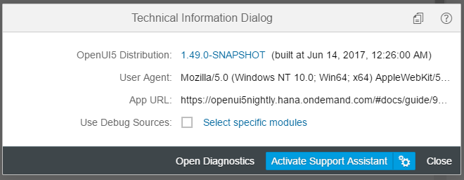

Download the example app with errors from the Demo Kit at Troubleshooting and run the app.
Open the Technical Information Dialog by pressing Ctrl Shift Left-Alt / Left-Option P .
The dialog box shows information related to the app and provides access to additional support options.
When you run into problems with your app, you should check the OpenUI5 version that you're using. The feature that you want to use may not be available in your version or may have some bugs that are already solved in a later version.
Check the displayed version information for the
OpenUI5 Version.Open the version overview at https://sdk.openui5.org/versionoverview.html to see if there are newer patch levels or releases of OpenUI5.
Read the What's New section in the documentation and check the Change Log to find information about new features and bug fixes.
You can view a specific version of the Demo Kit by adding the version
number to the URL, for example, https://sdk.openui5.org/1.38.8/.
The device on which you run the app may not be supported or might be detected incorrectly by OpenUI5. This can lead to issues with responsiveness or device adaption.
Verify that the User Agent shown in the dialog box matches your device, browser, and operating system. If the information is truncated because there is not enough space, you can see the full string as a tooltip. To copy the information, use the Copy technical information to clipboard button.
Test the functionality on another device or by using the device emulation features that are offered in the developer tools of your browser.
The OpenUI5 libraries are included in your app in a compressed form. To be able to efficiently debug these libraries, they have to be reloaded in their source format and with developer comments.
Select the Use Debug Sources checkbox and confirm reloading the app.
Open the developer tools of your browser
You may see additional errors and warnings in the developer console. These can help you investigate the problem further.
For performance reasons, you should deactivate this feature again when you're done.
You can also select debug mode only for specific packages:
Next to the Use Debug Sources checkbox, choose Select specific modules to open the selection dialog box.
Select one or more modules in the module tree and notice that the value of the input field changes accordingly.
Apply the selection and reload the app.
If you're really stuck or have found a bug, you can open a ticket. Choose the Copy technical information to clipboard button to copy the technical details from this dialog box and then attach them to your message.
The Technical Information Dialog also includes links to Diagnostics and Support Assistant that we will discuss in the following steps of this tutorial.